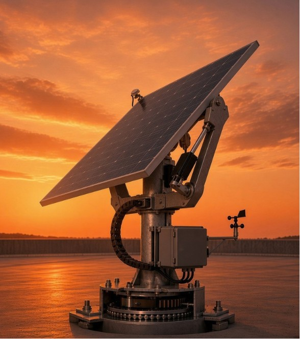

Sobre nosso projeto.
Somos um projeto criado para fazer você economizar. Oferecemos um jeito mais barato de ter os seus próprios painéis solares, com um retorno do investimento ainda mais rápido do que o dos nossos concorrentes.
E, sem mais delongas, que tal conhecer a nossa inovação? Criamos um suporte para placas solares inspirado nos girassóis, que maximiza a eficiência do sistema.
Ele funciona com um mecanismo controlado por uma inteligência artificial treinada para saber exatamente onde o sol está em cada momento do dia, e assim a placa está sempre na posição ideal.
